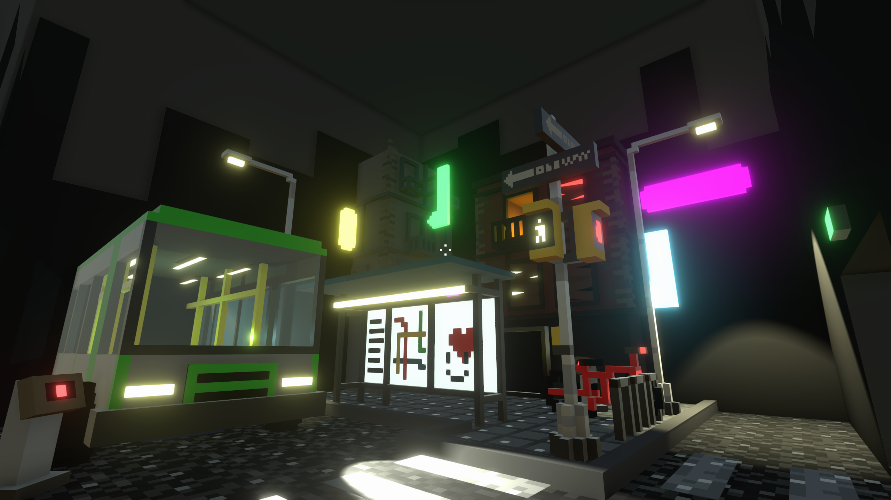
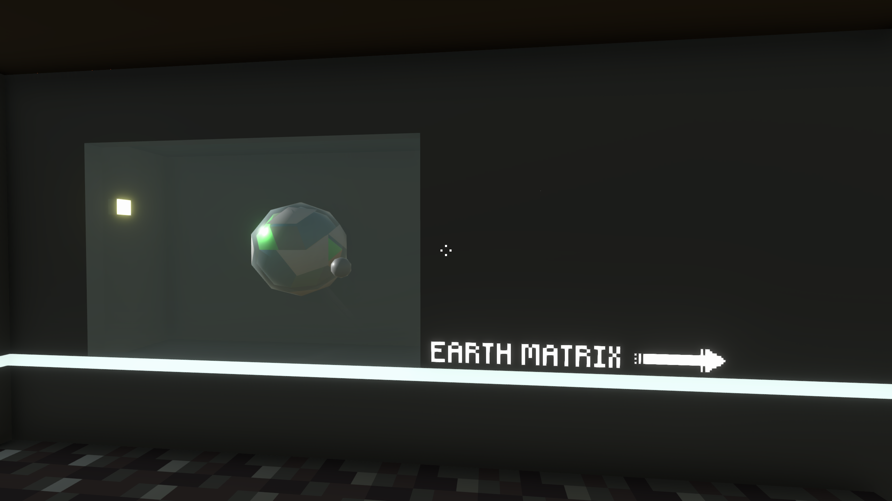

<--Mainhall
Table of the Early Modern Timeshistory of the Earth
2180
FLASH is recognized by the united nations of solar system (UNSS).
2181
Mars sees a surge in immigration and the rise of private space station construction and security contracting companies.
2182
experts note that Mars is still not out of range of the Flash, and that the closest planet to the solar system is Nivarus XII, 68 light-years away.
2183
the New Soviet Union (HCCCP) founded.
2185
the United States goes to war with the new Soviet Union with the Western Pacific Alliance (ESTO).

-Streetscape 2180-
Archaeologists have restored as much as they can after repairing ancient information storage devices to create a street view of a city on Earth in the year 2180.
This was the last year before the United Nations of Solar System (UNSS) (1945-2188) publicly recognized FLASH, which historians have called "the ensuing quiet".
-Manpower Individual Acceleration Prototype-
Archaeologists have found that this tool was popular between 1800-2100. It was a simple one-man mobile consisting of a triangular frame and two circular drives. The energy to drive it was entirely dependent on the user's own strength.
Historical sociologists believe that the popularity of this tool is related to the historical term "environmentalism" (environmental protectionism).
tips: this tool developed corresponding sporting competitions

<--Mainhall
The largest and most detailed museum of Earth history on Nivarus XII